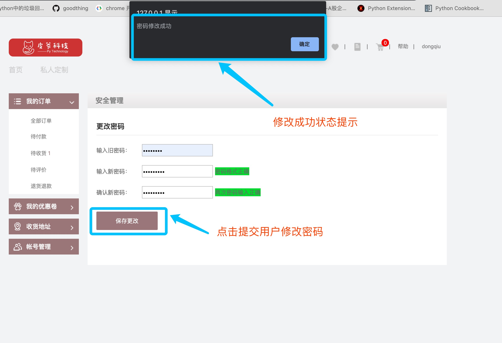
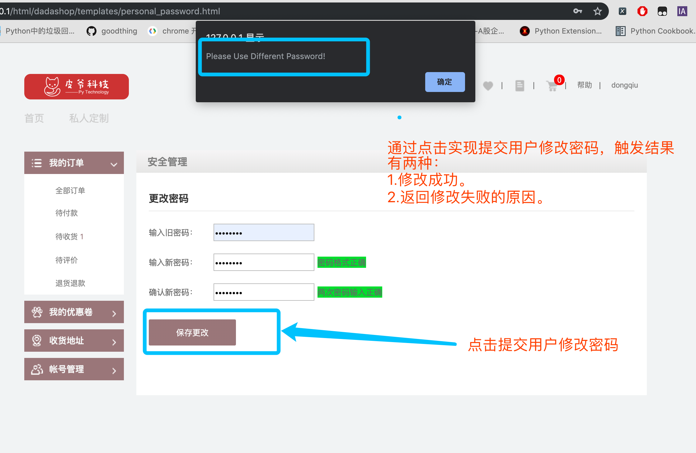
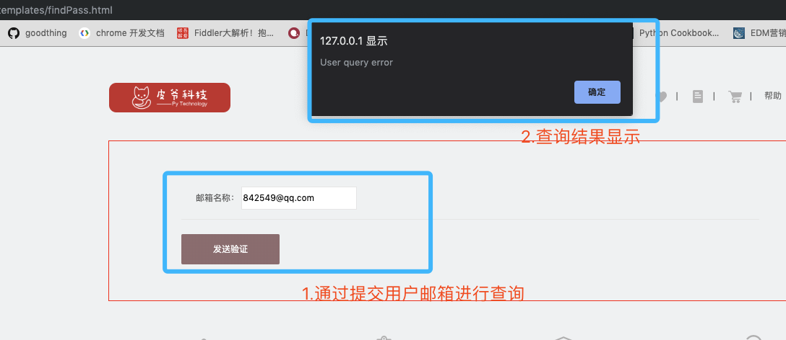
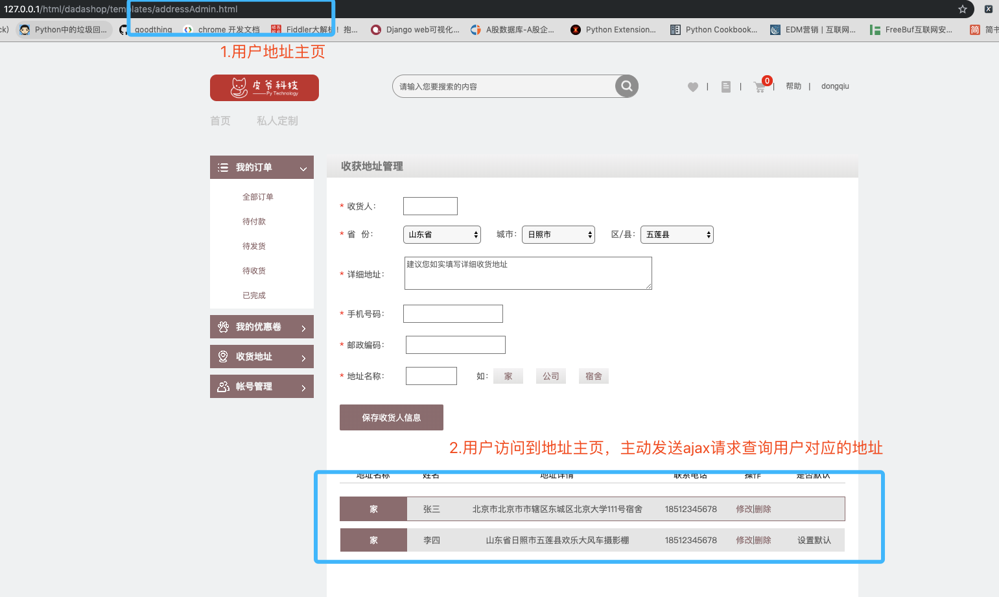
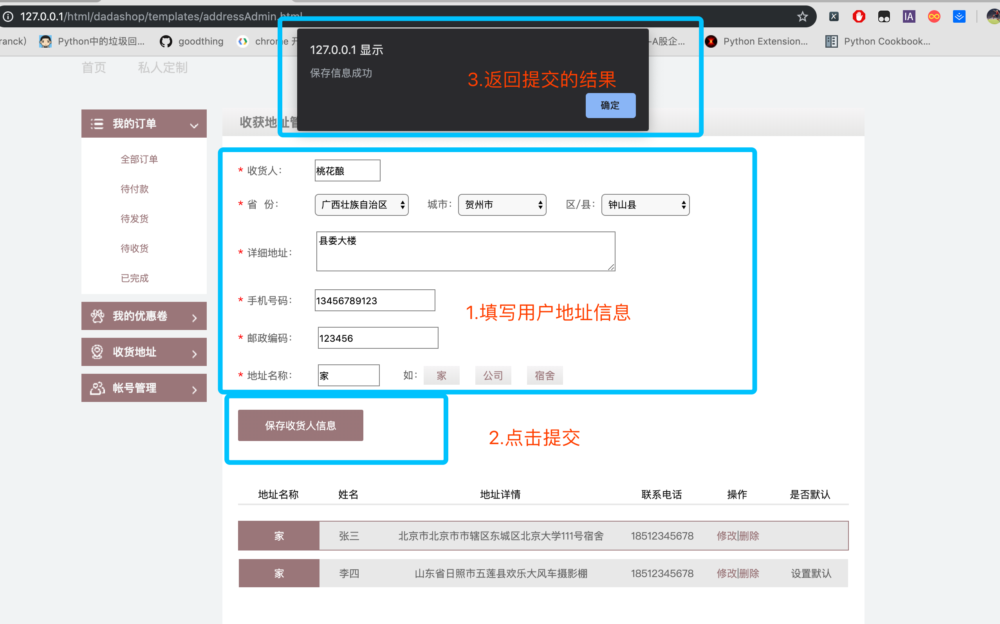
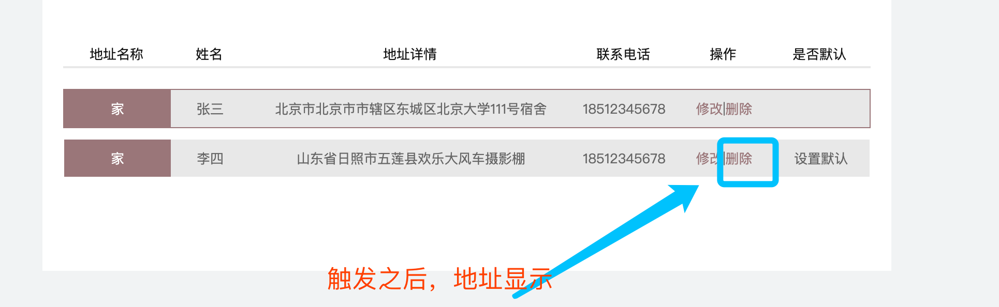
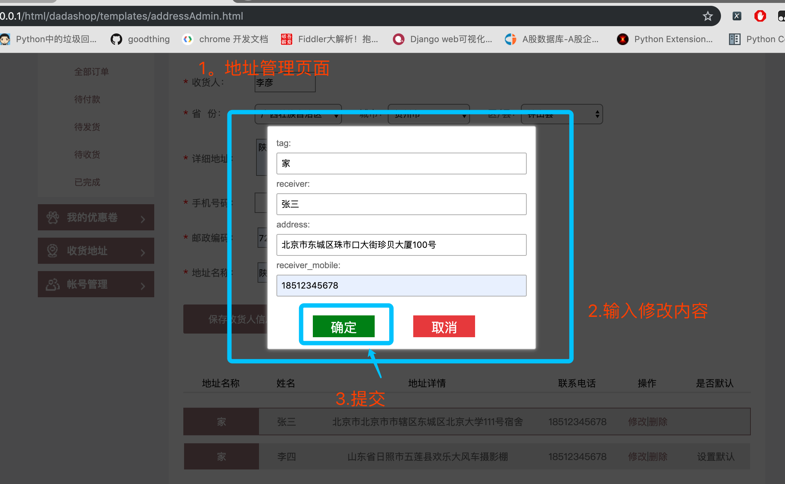
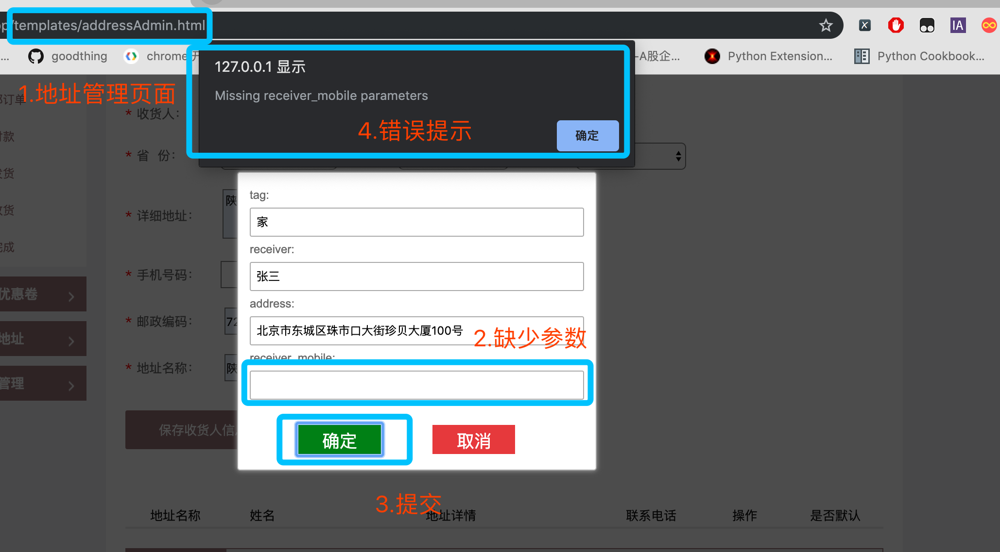

用户模块-接口说明
一.用户模块概述：
用户模块主要提供对于是用户使用本产品的基础。用户模块提供以下功能：
找回密码
修改密码
用户激活
用户收获地址新增/修改/删除/设为默认
二.事件定义
找回密码
用户在登陆页可以通过点击找回密码按钮来实现找回密码功能，主要分为三步。首先通过用户发送注册时的邮箱，此时会向邮箱中发送一份关于找回密码的验证码，此验证码会有时效。通过输入对应的验证码，验证没问题之后，显示设置新密码界面，提交之后就可以使用新密码进行登录。
##修改密码
修改密码功能需要在登录情况下进行，在个人账号管理页面中选择，需要输入旧密码以及新密码。通过ajax进行与后端交互。如果用户正确修改密码之后，则需要重新登陆。
用户激活
用户在注册的同时会同步发送用户激活的邮件。此激活邮件中存在用户激活的链接，用户通过点击此链接之后，在此页面内进行跳转到激活页面，此页面中有两个按钮，是否激活。用户点击激活之后，通过ajax发送激活请求。进行激活。
##用户地址
地址查询功能：在用户访问到地址页面时，此时会发送用户绑定的地址请求，全量返回有效的用户地址。
增加地址功能：用户可以提交新增地址，包括收货人、收件地址、地址标签、以及用户的联系方式，通过ajax提交。如果正常存储的话，此时回全量返回用户绑定的地址。
修改地址功能：用户可以修改有效地址中的收件人、收件地址、练习方式、以及地址标签。提交成功的话，回全量返回用户的地址。
删除地址功能：用户可以在界面上触发删除地址按钮，此时会将地址的ID通过ajax传入到后台，通过设置该地址的活跃属性来实现删除功能，此功能也是全量返回，然后通过渲染进行在前端展示。
设为默认地址：用户可以将任意一个非默认地址改为默认地址。通过ajax提交到后端，此功能提交的是地址的ID，将此ID的地址设置为默认，同时将此用户的其他地址ID设为非默认。然后进行全量返回。进行渲染。
三.API 说明
修改密码
在登录的状态下才能够修改用户登录密码。
事件触发：
页面名： personal_password.html

触发结果：
触发成功：

触发失败：

修改密码API：
URL: http://127.0.0.1:8000/v1/users/<username>/password
请求方法：POST
请求参数：JSON
| 字段 | 含义 | 类型 | 备注 |
|---|---|---|---|
| oldpassword | 旧密码 | char | 必填 |
| password1 | 新密码 | char | 必填 |
| password2 | 确认密码 | char | 必填 |
请求示例：
{ 'oldpasword':'123456', 'password1':'123321', 'password2':'654321'}| 字段 | 含义 | 类型 | 备注 |
|---|---|---|---|
| code | 状态 | int | 默认正常为200。异常见附录 |
| error | 错误信息 | dict | 与data二选一 |
| data | 正确信息 | dict | 与error二选一 |
| message | 包含在正确信息或者错误信息中，为具体原因 | char | 存在于data或者error中 |
返回值：JSON
响应格式：
xxxxxxxxxx# 正确示例{ 'code':200, 'data':'修改成功'}# 错误示例{ 'code':xxx, 'error':'error reason'}后端代码逻辑：
x# BaseUserView 是一个公共调用的基础试图。里边封装的两个方法。class BaseUserView(View): """ 此类是用来公共调用 1.获取生成用户地址列表 2.检查传递的参数 """ def get_address_list(self,alladdress): """ 对用户的地址进行序列化 params : 返回所有地址query_set,进行遍历 return : 地址列表，元素为每一条合法的地址 """ addresslist = [] for values in alladdress: each_address = {} each_address['id'] = values.id each_address['address'] = values.address each_address['receiver'] = values.receiver each_address['receiver_mobile'] = values.receiver_mobile each_address['tag'] = values.tag each_address['is_default'] = values.default_address addresslist.append(each_address) return addresslist def check_args(self,data): """ 用来检查用户传递的数据。是否为空。 params : 前端传递的数据，格式为字典。 return : 如果检查没问题那么返回data字典 如果检查有问题，那么返回该有问题数据的键（str） """ for key,value in data.items(): if not value: return key return dataclass ModifyPasswordView(BaseUserView): """ 用户登陆状态下 修改密码： http://127.0.0.1:8000/v1/user/<username>/password """ # 检查用户是否登陆的装饰器 def post(self, request, username): """ :param request:request 对象 :return: 成功修改的状态 """ # 1.对用户传入的数据长度进行检查 # 2.通过调用父类中的方法，来实现对于数据内容的检查 # 3.判断用户新密码和旧密码 # 4.判断新密码和确认密码 # 5.通过用户名来找到该用户对象，拿到用户密码，进行验证 # 6.修改用户密码 # 7.返回修改成功状态找回密码功能
时序图

###step1 发送邮箱验证请求：
事件触发：
页面名： findPass.html

触发结果：
邮箱中可以收到后台发送的邮箱验证码（10分钟之内有效）：

触发失败：

发送邮箱验证
URL：http://127.0.0.1:8000/v1/users/password/sms
请求方法：POST
请求参数：JSON
| 字段 | 含义 | 类型 | 备注 |
|---|---|---|---|
| 邮箱 | char | 通过邮箱找回密码 |
请求示例：
xxxxxxxxxx{ 'email':xxxxx # 邮箱}响应数据
| 字段 | 含义 | 类型 | 备注 |
|---|---|---|---|
| code | 状态吗 | int | 必填 |
| data | 返回数据 | dict | 与error二选一 |
| error | 返回错误原因 | char | 与data二选一 |
返回值：JSON
响应格式：
xxxxxxxxxx# 正常响应{ 'code':200, 'data':"邮件发送成功",}# 异常响应{ 'code':xxx, 'error':'error reason'}后端代码逻辑：
x
class SendSmsCodeView(BaseUserView): """ 用户找回密码视图处理函数： 分为三步： 1.验证邮箱，并且发送邮件验证码 2.验证邮件验证码， 3.验证码验证成功，修改密码 """ def post(self, request): # TODO检查传入数据的长度 # 1.验证用户邮箱是否正确。 # 2.首先查询用户是否10分钟之内，已经发送过验证码，如果有的话，就返回成功状态。 # 3.如果没有发送过，生成新的验证码，存入redis，将发送成功状态返回到前端 # 3.5 通过celery发送异步消息。step2: 发送邮箱验证码
事件触发：
页面名： findPass.html

触发结果：
正常结果：

异常结果：

发送邮箱验证码：
URL：http://127.0.01:8000/v1/users/password/verification/
请求方法： POST
请求参数：JSON
| 字段 | 含义 | 类型 | 备注 |
|---|---|---|---|
| 邮箱 | char | 必填 | |
| code | 验证码 | char | 必填 |
xxxxxxxxxx{ 'email':'xxxx', 'code':'xxxx'}响应数据：
| 字段 | 含义 | 类型 | 备注 |
|---|---|---|---|
| code | 响应状态吗 | char | 必填 |
| data | 返回正常数据() | dict | 与error二选一 |
| error | 返回错误原因() | char | 与data二选一 |
返回值：JSON
响应格式：
xxxxxxxxxx# 正常响应{ 'code':200, 'data':'验证码通过'， 'email’：‘xxxx’ # 返回邮箱}# 异常响应{ 'code':xxx, 'error':'error reason'}后端代码逻辑：
xxxxxxxxxxclass VerifyCodeView(BaseUserView): """ 第二步 验证发送邮箱的验证码 """ def post(self, request): """ 验证用户邮箱验证码 :param request: :param username: 用户名 :return: """ # 1. 检查前端传递的数据（邮箱和验证码） # 2. 获取redis中缓存验证码，和前端的进行校验 # 3. 如果验证码一致，删除redis中的数据，返回正确状态，以及状态码，以及用户邮箱。 # 4. 如果验证不一致，返回错误状态以及错误状态状态码。 step3 修改密码
事件触发：
页面名： findPass.html

触发结果：
正常响应

异常响应：

修改密码：
URL：http://127.0.0.1:8000/v1/users/password/new
请求方法：POST
请求参数：JSON
| 字段 | 含义 | 类型 | 备注 |
|---|---|---|---|
| 邮箱 | char | 必填 | |
| password1 | 新密码 | char | 必填 |
| Password2 | 确认密码 | char | 必填 |
请求i示例
xxxxxxxxxx{ "email":"xxx", # 通过用户邮箱锁定用户 'password1':'xxx' # 新密码 'password2':'xxx' # 确认密码}响应数据：
| 字段 | 含义 | 类型 | 备注 |
|---|---|---|---|
| code | 响应状态码 | char | 必填 |
| data | 返回正常数据 | dict | 与error二选一 |
| error | 返回异常数据 | dict | 与data二选一 |
| message | 具体响应信息 | char | 正确或者错误原因 |
返回值：JSON
响应格式：
xxxxxxxxxx# 正常数据{ 'code':200, 'data':'OK'}# 异常数据{ 'code':xxx, 'error':'error reason'}后端代码逻辑：
xxxxxxxxxxclass ModifyPwdView(BaseUserView): """ 最后一步验证邮箱，修改密码 """ def post(self, request): """ 用户重置密码第三步： """ # 1. 获取用户传递的数据长度，以及是否有值，进行校验。 # 2. 校验用户传递密码是否一致。 # 3. 根据用户的邮箱来查询用户 # 4. 校验新密码和旧密码是否相同 # 5. 重置用户的密码。邮箱验证激活功能
在用户注册时候，后台会给用户注册填写的邮箱发送一条激活的链接。通过点击链接跳转到达达商城的用户激活页面。通过激活来实现商城所有功能的体验。
事件触发：
用户在注册时候会通过邮箱给用户发送一封激活邮件，然后用户通过点击链接，进行重定向到前端地址，此时通过js获取用户前端页面的查询字符串，进行激活。
页面名： test_register.html

触发结果：
正常结果：


跳转激活页面：
页面地址： xxx/xxx/active.html

异常结果：

URL：http://127.0.0.1:8000/v1/users/activation?code=xxxx
请求方法：GET
请求参数：JSON
| 字段 | 含义 | 类型 | 备注 |
|---|---|---|---|
| code | 用户名和随机码base64编码字符串 | char | 必填 |
返回值：JSON
响应格式：
xxxxxxxxxx# 正常响应{ 'code': 200, 'data': '激活成功'}# 异常响应{ 'code':xxx, 'error':'error_reason'}后端代码逻辑：
xxxxxxxxxxclass ActiveView(View): """ # 用户发送邮件激活 # GET http://127.0.0.1:8000/v1/user/active?code=xxxxx """ def get(self, request): """ 由于没有设置激活链接的参数的redis中的有效时间。 在用户激活之后删除redis中缓存的激活链接 """ # 1. 通过查询字符串拿到用户传递的激活链接code # 2. 将传递的字符串进行base64进行反解，获取用户名和随机码 # 3. 通过用户名获取用户邮箱 # 4. 校验反解之后的邮箱和通过用户名获取的邮箱。 # 5. 如果一致的话，将用户的激活状态改为True。返回修改成功以及成功状态码。 # 6. 如果不一致，那么返回错误原因，以及错误状态码。地址功能-增删改查设为默认
达达商城提供地址增删改查设为默认的功能：
查询功能：在用户请求的地址管理页面的时候，等页面主体加载完之后，会发送查询当前用户的绑定地址。返回当前用户绑定的所有地址。
增加地址功能：用户可以新增绑定地址。
修改地址功能：可以修改用户地址中的任何字段。
删除地址功能：可以删除用户所绑定的地址，不是真正的删除，而是在后台将地址改为非活跃的。
设为默认地址：用户可以将任意一个非默认地址改为默认地址。默认地址在用户完成付款之前会直接绑定到该订单上。

地址增删改查接口
查询地址：
URL:http://127.0.0.1:8000/v1/users/<username>address
事件触发：
页面名：addressAdmin.html

触发结果：
正常响应：

异常响应：
如果用户没有登陆的访问到地址页面，此时会弹出用户登陆提示，然后跳到登陆页面。

请求方法：GET
返回数据：在访问页面的时候，返回当前用户的所有地址
返回值：JSON
响应格式：
xxxxxxxxxx# 正常数据返回{ "code":200, "addresslist":[ { 'id':123456, # 地址id 'address':'广东省深圳市龙华区嘉熙业广场1155室'， # 地址 'receiver’：’达内科技‘， # 收货人 'receiver_mobile‘：'12345678901', # 联系电话 'tag':'家'，# 地址标签 'postcode':'722494', # 'is_default':"True", }, { 'id':123457, 'address':'广东省深圳市龙华区嘉熙业广场1142室'， 'receiver’：’达内科技‘， 'receiver_mobile‘：'12345678910', 'tag':'公司'， 'postcode':'722406', 'is_default':"False", } ]}# 异常数据返回类型：{ 'code': status_code, 'error':'error_reason'}后端代码逻辑：
xxxxxxxxxxclass AddressView(BaseUserView): """ get: 获取用户的绑定的收获地址 post: 新增用户绑定的收获地址 delete：实现用户删除地址功能 put: 实现用户修改地址功能 """ def get(self, request, username): """ 返回用户关联的地址页面，以及地址 :param request: :return: addressAdmin.html & addresslist """ # 1.通过用户名来获取用户对象,拿到用户ID # 2.通过用户ID获取用户所有有效的地址 # 3.将用户地址进行序列化，返回新增地址：
事件触发：

触发结果：
正常结果：

异常结果：

URL:http://127.0.0.1:8000/v1/users/<username>address
请求方法：POST
请求参数：JSON
| 参数 | 参数类型 | 含义 | 备注 |
|---|---|---|---|
| receiver | char(10) | 收件人 | 必填 |
| receiver_phone | char(11) | 收件人电话 | 必填 |
| address | char(100) | 地址 | 必填 |
| postcode | char(7) | 邮编 | 必填 |
| tag | char(10) | 标签 | 必填 |
请求示例
xxxxxxxxxx{ 'receiver':'小王'， ‘receiver_phone’:'18667018590', 'address':'北京市东城区珠市口大街珍贝大厦2楼', 'postcode':'722405', 'tag':'公司'}返回值：JSON
响应格式：
xxxxxxxxxx# 正常响应{ "code":200, "data":"新增地址成功！"}# 异常响应{ 'code': status_code, 'error':'error_reason'}后端代码逻辑：
xxxxxxxxxx def post(self, request, username): """ 用来提交保存用户的收获地址 1.先获取相应的用户，然后根据用户的id来绑定地址 :param request: :return:返回保存后的地址以及地址的id """ # 1.对于用户传递的数据进行校验。 # 2.根据用户名获取用户对象，通过用户对象获取用户ID。 # 3.根据用户ID查询用户是否已经绑定地址了 # 3.1 如果用户已经有绑定地址，保存用户地址，默认地址default为False # 3.2 如果用户没有绑定地址，那么该条地址数据要设置用户默认地址 # 4. 保存成功之后，返回修改成功状态！删除地址
事件触发：
页面名：addressAdmin.html

触发结果：
正常触发:


URL:http://127.0.0.1:8000/v1/users/<username>address/<id>
请求方法：DELETE
请求参数: JSON
| 参数 | 参数类型 | 含义 | 备注 |
|---|---|---|---|
| id | char(10) | 地址ID | 必填 |
| username | char(11) | 用户名 | 必填 |
xxxxxxxxxx{ 'id':'xxxxxx'}返回值：JSON
响应格式：
xxxxxxxxxx# 正常响应{ "code":200, "data":"删除地址成功"}# 异常响应：{ 'code':xxxx, 'error':'error_reason'}后端代码逻辑：
xxxxxxxxxx def delete(self, request, username, id): """ 删除用户的提交的地址，此处删除并不是真正的删除，而是修改其状态。 :param request: 提交的body中为用户的地址的id :param username: :return: 删除后用户的所有的收货地址 """ # 根据用户发来的地址的id来直接删除用户地址 # 1. 根据用户传递的地址ID来筛选出此条地址。 # 2. 将此条地址的is_alive值改为False即可。 # 3. 返回删除成功的状态。###修改地址：
事件触发：
页面名：addressAdmin.html

触发结果：
正常响应



异常响应

URL:http://127.0.0.1:8000/v1/users/<username>address/<id>
请求方式：PUT
请求参数：JSON
| 参数 | 参数类型 | 含义 | 备注 |
|---|---|---|---|
| tag | char(10) | 地址标签 | 必填 |
| receiver_phone | char(11) | 收件人电话 | 必填 |
| receiver | char(7) | 收件人姓名 | 必填 |
| Address | char(100) | 收件人地址 | 必填 |
请求示例：
xxxxxxxxxx{ 'receiver':'校长', 'receiver_phone':'18667018590'， 'address':'广东省深圳市龙华区民治大道100号', 'tag':'公司',}返回值：JSON
响应格式：
xxxxxxxxxx# 正常响应{ "code":200, "data":"地址修改成功！"}# 异常响应{ "code": xxx, 'error':'error_reason'}####后端代码逻辑：
xxxxxxxxxx def put(self, request, username, id): """ 根据用户传递过来的收货地址来修改相应的内容 :param request: 用户请求的对象 :param address_id:用户地址id :return: 返回修改之后的地址的全部内容 """ # 1.根据用户传递的地址的ID来获取用户此条地址。 # 2.获取用户传递的地址的修改数据。 # 3.将该条地址的所有数据根据用户传递的数据重新赋值。 # 4.返回修改成功状态！设为默认：
事件触发：
页面名：addressAdmin.html

触发结果：
正常触发


URL：http://127.0.0.1:8000/v1/users/address/<username>/default
请求类型：POST
| 参数 | 参数类型 | 含义 | 备注 |
|---|---|---|---|
| id | char(10) | 地址ID | 必填 |
请求示例
xxxxxxxxxx{ 'id':'xxxxxxx'}返回值：JSON
响应格式：
xxxxxxxxxx# 正常响应{ "code":200, "data":"设为默认成功！"}# 异常响应{ 'code':xxx, 'error':'error_reason'}后端代码逻辑：
xxxxxxxxxxclass DefaultAddressView(BaseUserView): """ 用来修改默认地址 """ def post(self, request, username): """ 用来修改默认地址 :param request:用户请求对象 :param address_id:用户修改地址的id :return: """ # 1.先根据address_id 来匹配出用户的id # 2.筛选出用户的所有有效地址。 # 3.遍历所有的地址，将地址ID和当前的ID一样的地址default设置为True。其他的改为False。 # 4.返回修改成功状态！ 附录：用户模块异常状态码参考：
| 状态码 | 响应信息 | 原因短语 |
|---|---|---|
| 200 | 正常 | OK |
| 10100 | 无效参数 | Invalid parameters |
| 10101 | 无法获取用户名，需要登陆。 | User not logged in |
| 10102 | 设置新密码两次输入不一致 | Inconsistent passwords |
| 10103 | 旧密码错误 | Old password error |
| 10104 | 用户查询出错 | User query error |
| 10105 | 存储验证码失败 | Storage authentication code failed |
| 10106 | 验证码失效，请重新发送 | The validation code is invalid. Please send it again. |
| 10107 | 无法获取用户旧密码 | Unable to retrieve old password |
| 10108 | 无效的密码 | Please enter your password |
| 10109 | 确认密码有误 | Confirm that the password is incorrect |
| 10110 | 两次密码不一致 | Password Inconsistencies |
| 10111 | 旧密码错误 | Old password error! |
| 10112 | 验证链接失效 | Verify that the link is invalid and resend it |
| 10113 | 激活链接参数有误 | Error activating link parameters |
| 10114 | 地址查询出错 | Error in Address Query |
| 10115 | 无效的收件人 | invalid recipients |
| 10116 | 无效的地址 | Invalid address |
| 10117 | 无效的电话号码 | Invalid phone number |
| 10118 | 无效的邮编 | Invalid postcode |
| 10119 | 无效的地址标签 | Invalid tag |
| 10120 | 地址存储异常 | Address storage exception |
| 10121 | 地址查询异常 | Get address exception |
| 10122 | 无法获取地址ID | Get address id error |
| 10123 | 修改地址参数有误 | Error in address modification parameters |
| 10124 | 无法获取微博登陆页 | Cant get weibo login page |
| 10125 | 无法获取微博token | Unable to get weibo token |
| 10126 | 无效的邮箱 | Invalid email |
| 10127 | 无效的用户名 | Invalid username |
| 10128 | 创建用户失败 | Create user failed |
| 10129 | 无效的微博token | Invalid access token |
| 10130 | 关联微博失败 | Related to weibo failed |
| 10131 | 无效的手机号 | Invalid phone number |
| 201 | 微博账号未绑定本地用户 | access_token used |
| 10131 | 重复请求 | Repeated requests |
| 10132 | 获取验证码异常 | Verify Code Error |
| 10133 | 新旧密码重复 | Use Different Password |
| 10134 | 无法获取用户 | Can't get User |
Celery-消息任务队列
Celery 是一个 基于python开发的分布式异步消息任务队列，通过它可以轻松的实现任务的异步处理， 在我们这个项目中会用到使用celery进行发送用户的 邮箱激活邮件、短信验证码、邮箱验证码:
- 你想对100台机器执行一条批量命令，可能会花很长时间 ，但你不想让你的程序等着结果返回，而是给你返回 一个任务ID,你过一段时间只需要拿着这个任务id就可以拿到任务执行结果， 在任务执行ing进行时，你可以继续做其它的事情。
- 你想做一个定时任务，比如每天检测一下你们所有客户的资料，如果发现今天 是客户的生日，就给他发个短信祝福。
Celery 在执行任务时需要通过一个消息中间件来接收和发送任务消息，以及存储任务结果， 一般使用rabbitMQ 或者Redis,本项目中主要使用redis。
Celery有以下优点：
- 简单：一旦熟悉了celery的工作流程后，配置和使用还是比较简单的。
- 高可用：当任务执行失败或执行过程中发生连接中断，celery 会自动尝试重新执行任务。
- 快速：一个单进程的celery每分钟可处理上百万个任务。
- 灵活： 几乎celery的各个组件都可以被扩展及自定制。
工作原理

基于redis实现的Celery
- 安装Celery：
pip3 install celery - 后台启动redis服务
redis-server
创建celery任务文件夹
在此使用的通过创建一个独立的包来实现celery。在Django项目的内部，把celery_tasks当作一个独立的包进行使用，在保重有主模块和任务模块。
xxxxxxxxxxcelery_tasks | |----main.py # 主模块 |---- user_tasks.py # 任务执行模块settings.py
xxxxxxxxxxCACHES += { # 所有的验证有关的参数都存在redis 2号数据库。 "verify_email": { "BACKEND": "django_redis.cache.RedisCache", "LOCATION": "redis://127.0.0.1:6379/2", "OPTIONS": { "CLIENT_CLASS": "django_redis.client.DefaultClient", } },}# redis相关配置# 官网定义的变量名:# https://docs.celeryproject.org/en/latest/userguide/configuration.html#task-result-backend-settingsBROKER_URL = 'redis://127.0.0.1/14'CELERY_RESULT_BACKEND = 'redis://127.0.0.1/15'main.py
xxxxxxxxxx# -*- coding:utf-8 -*-import osfrom celery import Celery# 读取Django中的配置信息去启动if not os.getenv('DJANGO_SETTINGS_MODULE'): os.environ['DJANGO_SETTINGS_MODULE'] = 'dadashop.settings'celery_app = Celery('dadashop')# 导入celery配置celery_app.config_from_object('celery_tasks.settings')# 自动注册celery任务，每一个任务注册到任务列表中celery_app.autodiscover_tasks(['celery_tasks.user_tasks'])users_tasks.py
将所有的任务写到同一个函数中，根据sendtype的不同来选择不同的发送类型任务
xxxxxxxxxx# -*- coding:utf-8 -*-from celery_tasks.main import celery_appfrom django.core.mail import send_mailfrom django.conf import settingsfrom utils.SendTemplateSMS import send_template_SMS.task(name='send_verify')def send_verify(email=None, code=None, email_code=None, phone=None, verify_url=None, sendtype=None): """ 发送邮件 :param receiver : 收件人，code 邮箱验证码 :return:None 发送类型为0： 则发送邮箱验证码。 发送类型为1： 则发送邮箱激活链接 发送类型为2： 则发送短信验证码 """ if sendtype == 0: # 发送类型为1的时候，发送密码找回邮件。 elif sendtype == 1: # 发送类型为1的时候，发送邮箱激活链接 elif sendtype == 2: # 发送类型为2的时候。发送短信验证码解释说明：
在不同的好事任务中我们只需要调用相应的函数的时候加上 函数名.delay(*args,**kwarg),就可以通过celery来执行相应的任务。
例如：
xxxxxxxxxx# firstclass SendSmsCodeView(View): """ 用户找回密码视图处理函数： 分为三步： 1.验证邮箱，并且发送邮件验证码 2.验证邮件验证码， 3.验证码验证成功，修改密码 """ def post(self, request, username): data = request.POST email = data.get('email', None) ...... ...... # 在此处调用发送邮箱验证码 send_verify.delay(email=email, email_code=email_code, sendtype=0) return JsonResponse({'code': 200, 'data': 'OK'})# secondclass Users(View): def post(self, request): ... ... # 发送用户激活链接 # 此链接是通过用户名和邮箱中间拼接了/ code = "%d" % random.randint(1000, 9999) code_str = code + '/' + username # 生成激活链接： active_code = base64.urlsafe_b64encode(code_str.encode(encoding='utf-8')).decode('utf-8') redis_conn = get_redis_connection('verify_email') # TODO : 用户激活链接永久有效，可以根据自己的喜好去设置。 redis_conn.set("email_active_%s" % email, active_code) verify_url = settings.ACTIVE_HOST + '/html/templates/active.html?code=%s' % (active_code) token = make_token(username) result = {'code': 200, 'username': username, 'data': {'token': token.decode()}} send_verify.delay(email=email, verify_url=verify_url, sendtype=1) return JsonResponse(result)# thirdclass SmScodeView(View): """ 实现短信验证码功能 """ def post(self, request): """ 短信测试： :param request: :return: """ .... .... # 发送短信验证码 send_verify.delay(phone=phone, code=code, sendtype=2) return JsonResponse({'code': 200, 'data':message': 'OK'})